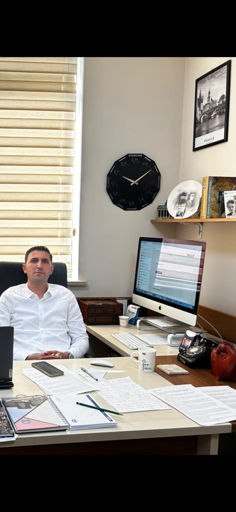
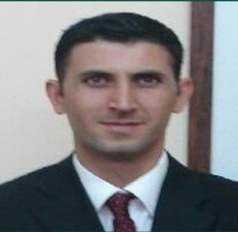
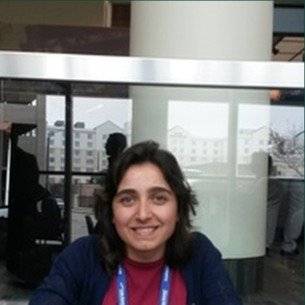
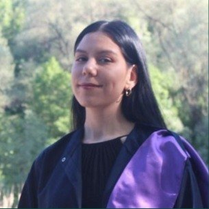
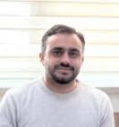

Subcritical Water & Separation Science
Chromatographic separations, aqueous mobile-phase behavior, temperature effects, stationary-phase stability and instrument adaptation for greener analysis.
ANALYTICAL CHEMISTRY
We study subcritical water separations, sustainable carbon materials and functional composites — combining analytical chemistry with experimental materials research.

Prof. Dr. Berkant Kayan · Group Leader
The Berkant Kayan Research Group is an independently presented academic research team led by Prof. Dr. Berkant Kayan at Aksaray University, Türkiye.
Our research spans analytical separations, water-based processing, sustainable carbon materials and functional composites. Across these themes, we pay particular attention to experimentally grounded methods, material behavior and the conditions that determine practical performance.
We work with academic collaborators and welcome research exchange across chemistry, environmental science and materials development.
Three broad themes connect the analytical and materials-based work of our group.
Chromatographic separations, aqueous mobile-phase behavior, temperature effects, stationary-phase stability and instrument adaptation for greener analysis.
Biochar and hydrochar preparation, characterization, surface properties and the environmental use of carbon materials made from biomass and residues.
Polymer hybrids, chitosan-based systems, zirconia-containing composites and functional materials designed for specific application needs.
A selection of documented project activity and research studies. Funding records and exploratory work are identified separately.
Green-synthesis research on value-added carbon composites derived from fruit-peel waste, with a focus on ZnO incorporation and electrochemical sensing of vanillin.
Practical temperature windows, aqueous mobile-phase behavior, analyte stability, stationary-phase durability and instrument adaptation for high-temperature separations.
Related scientific publications ↗Preparation and dispersion of nano-chitosan and ZrO₂ in PMMA-based hybrid materials, with emphasis on reproducible processing and material characterization.
Research topic · project metadata to be addedBiomass-to-carbon conversion, surface and structural characterization, and applications in adsorption and functional material development.
Related scientific publications ↗Interdisciplinary studies of carbon-based supports and composite materials, connecting synthetic preparation with characterization and application-focused testing.
Collaborative research themeResearch studies are not presented as separate funded grants unless an official award record is available. The funded project above is drawn from the university's 2025 activity report; its current completion status has not been independently reconfirmed.
Representative publications across subcritical water chemistry and carbon-based materials. DOI links open publisher records.
Showing 5 selected publications
B. Kayan and A. Alver · Reactions
P. Yekan Motlagh et al., including B. Kayan · Journal of Environmental Chemical Engineering
E. Yabalak, S. Akay, B. Kayan, A. M. Gizir and Y. Yang · Molecules
D. Kalderis, B. Kayan, S. Akay, E. Kulaksız and B. Gözmen · Journal of Environmental Chemical Engineering
S. Akay, B. Kayan and Y. Yang · Journal of Chemical & Engineering Data
The people behind our research. We value multidisciplinary ideas, careful experimentation and collaborative work.

Group Leader · Aksaray University

Research group member

Graduate researcher

Visiting group member
Original photographs of laboratory methods, instruments, research visits and academic exchange.
Photographs are from the group’s research and academic archive. Photo identifiers follow the group’s archive numbering; archival photographs are not presented as current facilities.
International teaching, research visits and scientific partnerships contribute to the group's academic experience. Erasmus activities are distinguished from other visits.
We welcome dialogue with universities, research teams and graduate scholars interested in shared scientific questions.
Propose a collaboration ↗Erasmus+ teaching mobility · Source ↗
Erasmus+ teaching mobility · Source ↗
Erasmus+ academic mobility · Source ↗
Academic visit · Source ↗
Academic visit · Source ↗
Doctoral research visit (non-Erasmus) · Source ↗
Research partnerships are presented separately from teaching mobility and academic visits. The examples below are supported by co-authored publications; they do not imply formal institutional agreements.
Scientific collaboration · biochar & environmental materials
Joint research has examined biomass-derived biochars, their surface properties and adsorption of organic contaminants from water.
Scientific collaboration · analytical separation science
Co-authored work investigates solubility and chromatographic separation in subcritical water, including pharmaceutical compounds and high-temperature aqueous mobile phases.
Universidad Nacional de Colombia · Bogotá, Colombia
Scientific exchange in physicochemical research, with shared interests in pharmaceutical solubility, cosolvent systems and solution thermodynamics.
Have a complementary research question, method or experimental capability?
A few documented milestones behind the scientific work. This section will grow with original laboratory photographs and project records.
Doctoral research by Dr. Sema Akay, supervised by Prof. Dr. Berkant Kayan, on pharmaceutical solubility at elevated temperatures and related chromatographic separations.
University thesis record ↗A documented graduate research topic exploring pharmaceutical active ingredients in pure solvents and solvent mixtures.
University thesis record ↗International academic mobility included discussions and presentations on subcritical water chromatography and collaborative research.
University announcement ↗Original group laboratory and travel photographs will be added here once selected and approved for publication.
A small selection of research outputs and academic activity. The full record is available through the links below.
A review addressing materials, interfacial processes and their relevance to water treatment.
Find the publication on Google Scholar ↗International academic activity including a presentation on subcritical water chromatography.
University announcement ↗University-documented research on fruit-peel-derived carbon composites and vanillin determination.
Explore the project ↗Selected themes that connect fundamental analytical questions with practical materials research.
Chromatographic methods based on water-rich mobile phases and elevated-temperature separations.
Explore research ↗Researcher identifiers, publications and professional profiles are linked directly to their respective services.
We are open to discussing scientifically aligned collaborations and exchanges. These invitations are not advertisements for funded vacancies or guaranteed placements.
Share a focused proposal connected to the group's research areas.
Send an inquiry ↗Any actual funded position or student opening should be explicitly listed with eligibility criteria, deadlines and funding information before applications are invited.
We welcome specific, feasible proposals from researchers, academic departments and prospective exchange partners. Share your research question, relevant expertise and a realistic idea for working together.
Initial inquiries are reviewed individually. A message is not a guarantee of supervision, visiting placement or project approval.